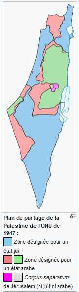
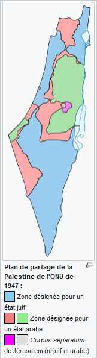
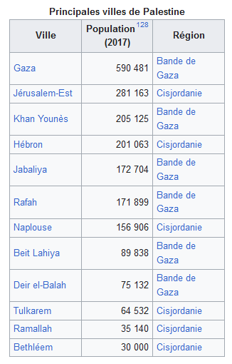
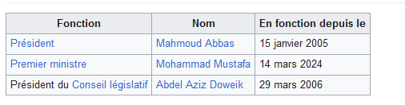

Palestine
La Palestine , en forme longue l'État de Palestine (arabe : دولة فلسطين, Dawlat Filasṭīn), est un État souverain de jure (loi palestinienne). Située au Moyen-Orient, elle est présente sur les territoires palestiniens occupés et revendique Jérusalem-Est et l'entièreté de la Cisjordanie. Ses frontières sont, de facto et depuis 1994 (accords d'Oslo), celles des zones A et B de la Cisjordanie, gouvernée par l'Autorité palestinienne, et celles de la bande de Gaza, sous contrôle du Hamas depuis 2007 mais revendiquée par l'Autorité palestinienne. Sa capitale est de jure Jérusalem, cependant le siège du gouvernement palestinien se situe à Ramallah en raison de l'annexion de Jérusalem-Est par Israël.
Anciennement intégrée à l'Empire ottoman, puis passée sous mandat britannique après la Première guerre mondiale, elle émerge comme État indépendant à la suite de la guerre israélo-arabe de 1948-1949. La déclaration du 15 novembre 1988 de l'Organisation de libération de la Palestine en exil à Alger a été retenue par l'État de Palestine comme sa déclaration d'indépendance et acceptée comme telle par la Ligue arabe et l'Organisation de la coopération islamique. En 2011, la Palestine adhère à l'UNESCO. Le 29 novembre 2012, l'État de Palestine adhère à l'Organisation des Nations unies (ONU) en tant qu'État observateur non-membre.
Sa souveraineté nationale, sa reconnaissance internationale, ses réfugiés, son territoire et ses frontières, sa capitale même sont l'objet de conflits armés et de débats politiques. En 2017, l'État de Palestine est reconnu par 139 États (72 % des 193 États membres que compte l'Organisation des Nations unies), mais ne l'est pas par les pays d'Amérique du Nord.
Villes principales
Histoire
Période antique
La partie sud du Levant sur le territoire actuel de la Palestine a été occupée par le peuple des Philistins au XIIe siècle av. J.-C. Ils s'installèrent sur la côte allant de Gaza à Jaffa en s'intégrant à la population cananéenne locale. Plus tard sous domination romaine, l'empereur Dioclétien appelle Palestine la province correspondant au Levant méridional.
Période ottomane
Lors de la victoire des Turcs ottomans sur les Mamelouks égyptiens en 1517, la région passa sous autorité turque et fit partie de l'Empire ottoman pendant 400 ans, jusqu'à l'hiver 1917-1918. La région de Palestine fit partie intégrante de la « province de Damas » (Dimashq al-Shâm), gouvernée depuis Istanbul et englobée dans les districts recouvrant la région moyen-orientale. Le turc était la langue officielle de l'administration, alors que l'arabe syro-libanais restait la langue de la majorité des populations locales. La province de Damas fut progressivement et informellement appelée par les Turcs Arz-i Filistin pour désigner la zone située entre la Méditerranée et le Jourdain.
Au cours des années 1880, des colons allemands et des immigrants juifs17 apportèrent des machines modernes et des capitaux nécessaires au développement du pays. On estime que la Palestine abritait quelque 24 000 Juifs18 et majoritairement à Jérusalem19, alors que la population totale s'élevait à environ 470 000 habitants16 ; les langues les plus utilisées étaient l'arabe et le turc. Le gouvernement ottoman imposa de sévères restrictions à l'immigration et à l'achat de terres par les Juifs. À la fin du XIXe siècle, la région est divisée en trois districts, ceux d'Acre, de Balqa et de Jérusalem, les deux premiers appartenant à la wilayet de Beyrouth .
Plan de Partage de la Palestine mandataire et le conflit de 1947-1948
La guerre se solde par la défaite des armées arabes et des milices palestiniennes. Les Palestiniens qualifient cette défaite de « Naqba » (la catastrophe). En 1949, Israël signe des armistices séparés avec l’Égypte, le Liban, la Jordanie et la Syrie. Selon ces accords d'armistice, le territoire d'Israël comprend environ 78 % de la Palestine mandataire (soit 18 % de plus que défini par proposition de partition de l'ONU)28. Ces lignes de cessez-le-feu ont été dénommées la « Ligne verte ». La bande de Gaza et la Cisjordanie sont respectivement occupées par l’Égypte et la Jordanie qui annexe cette région, ainsi que la Vieille ville de Jérusalem. Israël sera reconnu dans ces nouvelles frontières, mais les annexions de la Bande de Gaza, de la Cisjordanie et de Jérusalem-Est ne sont pas reconnues par la communauté internationale. À la suite de ce conflit, environ 700 000 des 900 000 Arabes palestiniens ont fui ou ont été expulsés des territoires qui sont devenus l’État d'Israël.
À la suite de ce conflit, environ 700 000 des 900 000 Arabes palestiniens ont fui ou ont été expulsés des territoires qui sont devenus l’État d'Israël29. Le 20 septembre 1948, la Ligue arabe déclare la création d'un gouvernement palestinien, et le 22 septembre un gouvernement arabe de toute la Palestine30,31 est établi dans la Bande de Gaza occupée par l'Égypte. Cette décision n'est pas acceptée par la Jordanie qui annexe les territoires qu'elle occupe. Quelques jours plus tard, une Assemblée constituante se réunit, élit comme Président le Mufti Hadj Mohammed Amin al-Husseini et prend le nom de Conseil national palestinien. L'Assemblée vote également une Constitution provisoire32, mais cette proclamation n'est suivie d'aucune reconnaissance internationale.
Politique intérieur
La Palestine est une république semi-présidentielle unitaire. En 2020, son indice de démocratie la place 113e parmi 167 pays65. La Mouqata'a désigne les bureaux gouvernementaux de l'Autorité palestinienne. Principalement deux « Mouqata'as ont été utilisées par le pouvoir palestinien, à Ramallah en Cisjordanie (actuelle) et dans la ville de Gaza.
Pouvoir exécutif
La Palestine est dirigée par un Président élu au suffrage universel et par un Premier ministre nommé par le Président et issu de la majorité parlementaire du Conseil législatif. La dernière élection présidentielle a eu lieu en 2005.
Pouvoir législatif
Les élections législatives palestiniennes de 2006 ont élu les 132 membres du Conseil législatif palestinien (Parlement palestinien) parmi les candidats issus des 16 districts des territoires palestiniens occupés. La Palestine dispose également d'un Parlement en exil, le Conseil national palestinien qui compte 669 élus. Les membres du Conseil législatif en font automatiquement partie mais il comprend également des représentants de toutes les communautés palestiniennes de la diaspora. Son bureau principal est établi à Amman mais il dispose également d'une branche à Ramallah. C'est lui qui déclara l'indépendance de la Palestine à Alger en 1988. Le président palestinien Mahmoud Abbas a assuré qu'au moins sept sièges seraient réservés aux candidats chrétiens au sein du Parlement après les élections législatives de mai 2021, les premières depuis quinze ans
Symboles d'État
Drapeau palestinien
Sur la gauche, un triangle rouge prolongé par trois bandes horizontales noire, blanche et verte.
-le triangle rouge symbolise la « maison hachémite » de Mahomet .
-la bande noire symbolise les Abbassides de Bagdad (750-1258) .
-la bande blanche symbolise les Omeyyades de Damas (661-750) .
-la bande verte symbolise les Fatimides du Caire (969-1171)141.
Ces couleurs avaient été adoptées par le mouvement panarabe durant la grande révolte arabe des Hachémites de 1916, soulèvement visant à unifier le Moyen-Orient142. La révolte éclata mais une fois les terres arabes libérées de l'occupation ottomane, les Européens se partagèrent la région lors des accords Sykes-Picot.